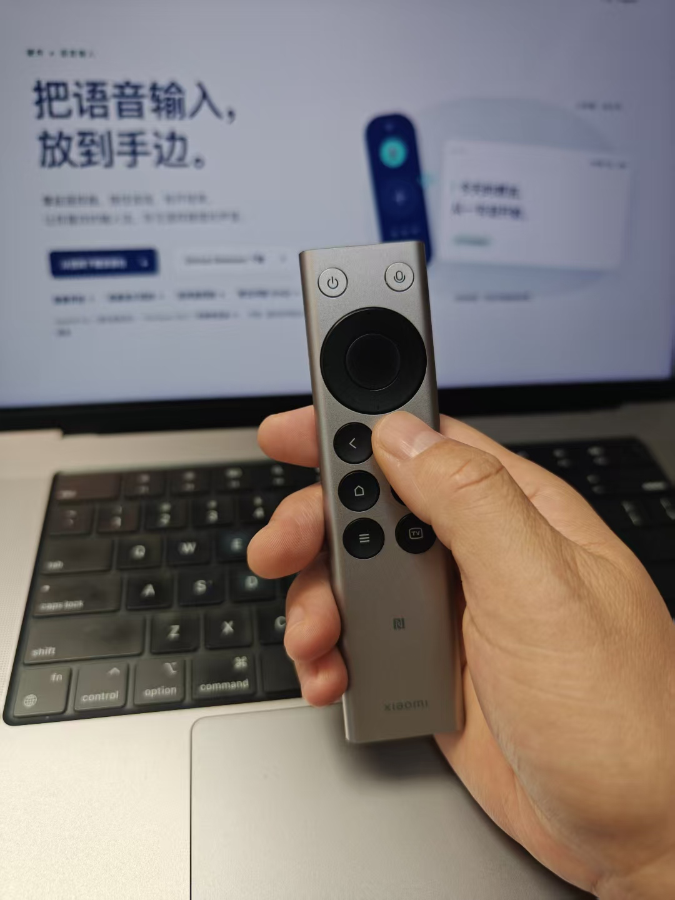

小米蓝牙遥控器 2 Pro
型号：RC003 · 蓝牙直连 · Type-C 充电
- 外观与手感：银灰色单面长条机身（约 138 × 35 × 8.9 mm，重约 61 g），圆形五向方向盘，底部 Type-C 充电口（内置 300mAh 电池）。
- 语音方式：按住语音键说话，松开停止收音（单次上限约 60 秒）；干净利落，不用记着二次按停，适合桌面短句和高频对话。
- 按键映射：正面控制键支持单击/双击/长按；默认主页键切换应用、TV 键播放/暂停、菜单键上下文菜单、电源键退格、返回键 Escape（NFC 投屏非 Mac 功能）。
- 购买参考：参考价约 ¥99（活动常有 ¥60+ 特价），下单请认准商品名“蓝牙遥控器 2 Pro”。